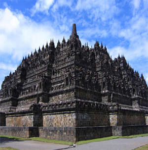
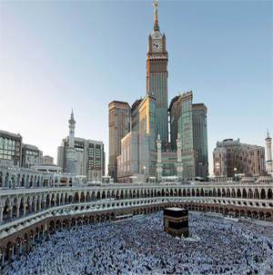
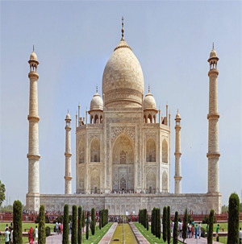
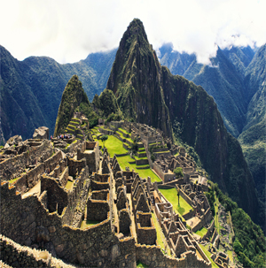
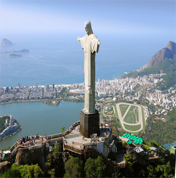

Dibangun Tembok Besar China yakni untuk membatasi wilayah-wilayah perkotaan dan perumahan. Tembok besar didirikan sebagai benteng pertahanan, batas kepemilikan lahan, penanda perbatasan dan jalur komunikasi.

Borobudur adalah sebuah candi Buddha yang terletak di Borobudur, Magelang, Jawa Tengah, Indonesia.Candi berbentuk stupa ini didirikan oleh para penganut agama Buddha Mahayana sekitar abad ke-8 masehi.

Mekah merupakan sebuah kota utama di Arab Saudi. Kota ini menjadi tujuan utama kaum muslimin dalam menunaikan ibadah haji,Di kota ini terdapat sebuah bangunan utama yang bernama Masjidil Haram.

Bangunan itu didirikan oleh Kaisar Mughal Shah Jahan sebagai mausoleum untuk istri tercintanya. Tetapi sebuah drama yang di India mengindikasikan bahwa ada motif lain di balik pembangunan Taj Mahal
Kolosseum adalah sebuah peninggalan bersejarah berupa arena gladiator, dibangun oleh Vespasian. Tempat pertunjukan yang besar berbentuk elips yang disebut amfiteater atau dengan nama aslinya Flavian Amphitheatre.
Piramida Agung Giza Dipercaya bahwa piramida ini dibangun sebagai makam untuk firaun dinasti keempat Mesir, Khufu (Χεωψ, Cheops) dan dibangun selama lebih dari 20 tahun.

Gunung Tua sering juga disebut "Kota Inca yang hilang" adalah sebuah lokasi reruntuhan Inca pra-Columbus yang terletak di wilayah pegunungan pada ketinggian sekitar 2.350 m di atas permukaan laut,Machu Picchu berada di atas lembah Urubamba di Peru.

Patung Kristus Penebus adalah patung Yesus Kristus dengan gaya arsitektur Art Deco terbesar dan terdapat di Rio de Janeiro, Brasil.Patung memiliki tinggi 38m terletak di puncak Gunung Corcovado.
The Wave merupakan sebuah fenomena geologi indah yang bisa ditemukan di Arizona, Amerika Serikat. Formasi batu pasir di dekat perbatasan Arizona dan Utah ini begitu unik hingga banyak diburu oleh pendaki untuk ditaklukkan.